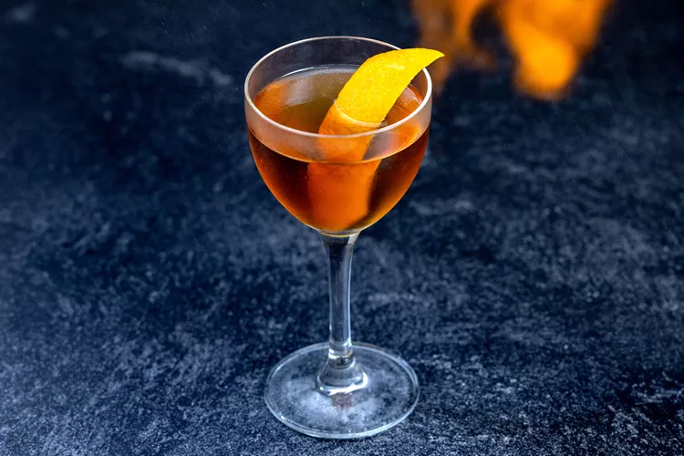

5. Revolver
More than a decade before the Espresso Martini’s resurgence, San Francisco gifted us this ‘Espresso Manhattan.’

Essentially an "Espresso Manhattan," this cocktail combines bourbon, coffee liqueur, and orange bitters. Use Bulleit
bourbon for the higher amount of rye in its mash if you'd like to pay homage to the traditional Manhattan's rye whiskey base.
Ingredients
2 ounces bourbon
1/2 ounce coffee liqueur
2 dashes orange bitters
Orange peel, flamed, for garnish
How to prepare
Step 1
- Add the bourbon, coffee liqueur and orange bitters to a mixing glass filled with ice, and stir until well-chilled.
Step 2
- Strain into a chilled cocktail glass.
Step 3
- Flame an orange peel over the top of the drink to express its oils, then garnish with the peel.
Helpful Tips
- I would recommend using a high-proof rye whiskey. My go-to whiskey for
cocktails is Rittenhouse 100, a 100 proof rye (50% ABV) that usually works great in
a manhattan or an old fashion. It is also delicious with bourbon, like Russell's Reserve.
Still, I find the rye slightly more interesting and complex, with the rye spiciness contrasting
with the sweetness of the coffee liqueur.
Enjoy your Revolver Cocktail!